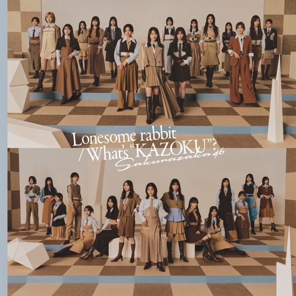

サカミチ
サカミチコインランドリーこいんらんどりー

初収録リリース「Lonesome rabbit / What's "KAZOKU"?」のジャケット
櫻坂46
発売日：2026-06-10
収録：Lonesome rabbit / What's "KAZOKU"?（15thSG）
種別：BACKS曲
センター：遠藤理子
作曲：youth case
編曲：花村智志
ライブ披露：15件
フォーメーション
上が後列、下が前列です。色付きがセンター。（公式発表に基づく）
 大沼晶保
大沼晶保 稲熊ひな
稲熊ひな 幸阪茉里乃
幸阪茉里乃 遠藤光莉
遠藤光莉 目黒陽色
目黒陽色 山田桃実
山田桃実 勝又春
勝又春 村山美羽
村山美羽 小田倉麗奈
小田倉麗奈 佐藤愛桜
佐藤愛桜 増本綺良
増本綺良 遠藤理子
遠藤理子 松本和子
松本和子参加メンバー（15名）
遠藤光莉、大沼晶保、幸阪茉里乃、増本綺良、石森璃花、遠藤理子、小田倉麗奈、中嶋優月、村山美羽、稲熊ひな、勝又春、佐藤愛桜、松本和子、目黒陽色、山田桃実
この曲が披露されたライブ（15件）
同じリリースの曲
Lonesome rabbit、What's "KAZOKU"?、コインランドリー、We got your back、狼たちよ、各駅停車、恵まれ過ぎて